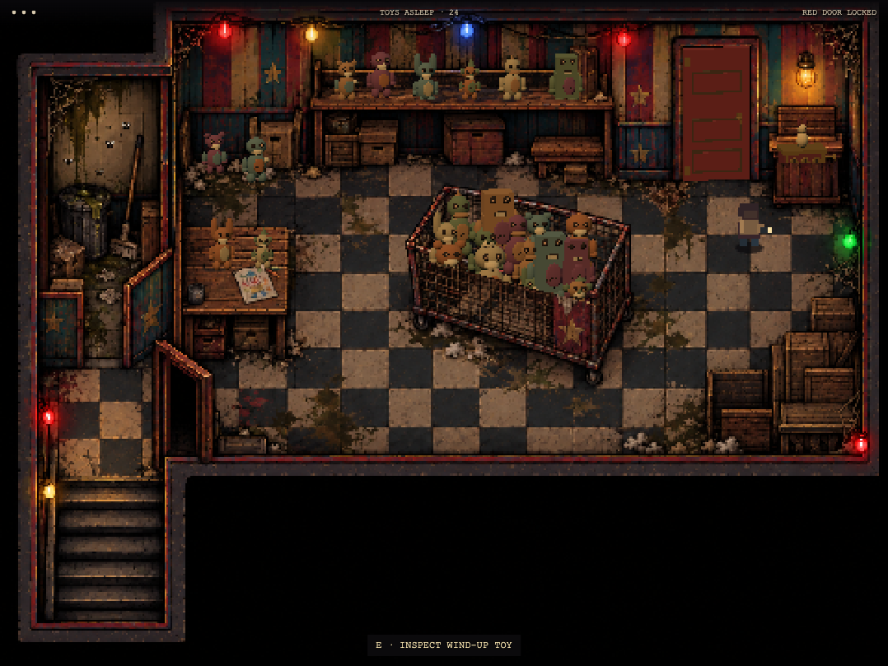
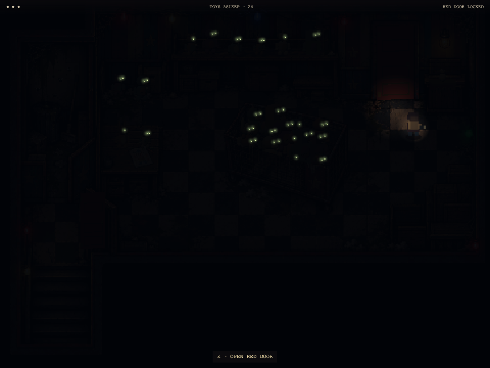
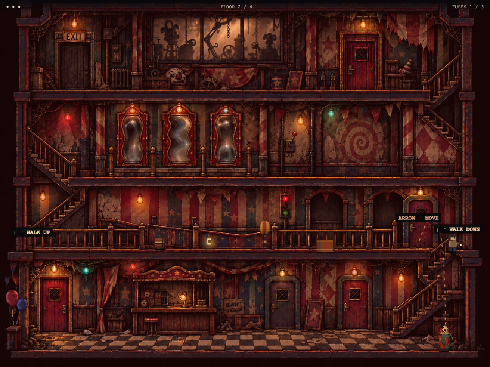
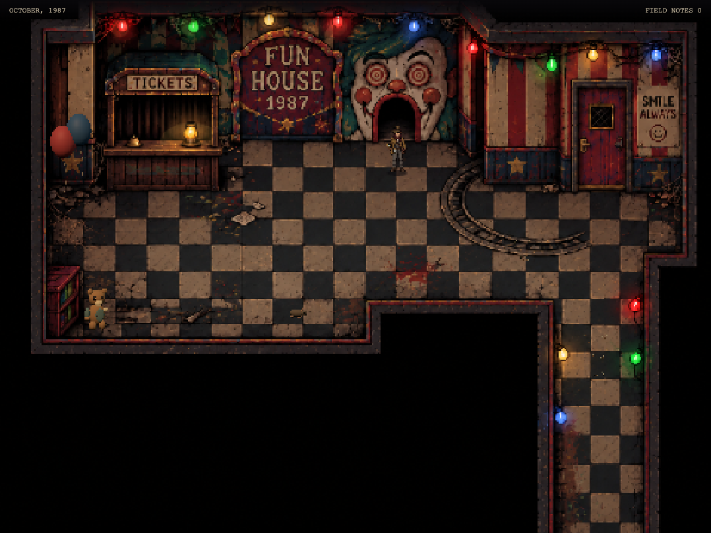

Street: thicker 3D bench, kiosk and abandoned-cart volumes.
Hall: solid counter, cabinet and door layers; 3D teddy, rat, balloons and flying insects.
Platformer: approved curly red-haired clown fires arrows from the floor below. Warning lines lock the aim before a shot. Bomb balloons flash for 1.6 seconds before a brief blast.
Toy room: fourteen larger toys crowd the open crate; twenty-four toys wake in total. Heads and luminous eyes track the investigator. Crate sides and individual box footprints remain solid.
The revised investigator has front, back and side views. Its existing controls and collision sizes are retained.

Filled crate, before the lights fail.

Eyes remain visible in the blackout.

The clown aims upward from the floor below.

The revised detective in the ticket hall.
The game retains its fixed-camera illustrated presentation. Some scenery is projected 3D relief; it is not a freely rotatable 3D environment. Character movement uses the four directional sprites with a small walking bob, not a full hand-drawn animation sheet.
Validation: model regressions, complete platformer escape, desktop/touch street-to-hall interaction and toy-room escape checks, and asset verification. Result files are stored alongside these captures. The insect's intended real-world scale is below the generic verifier's minimum prop size.